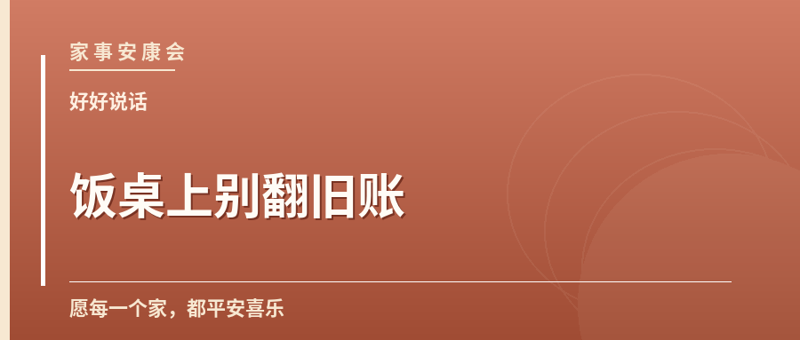
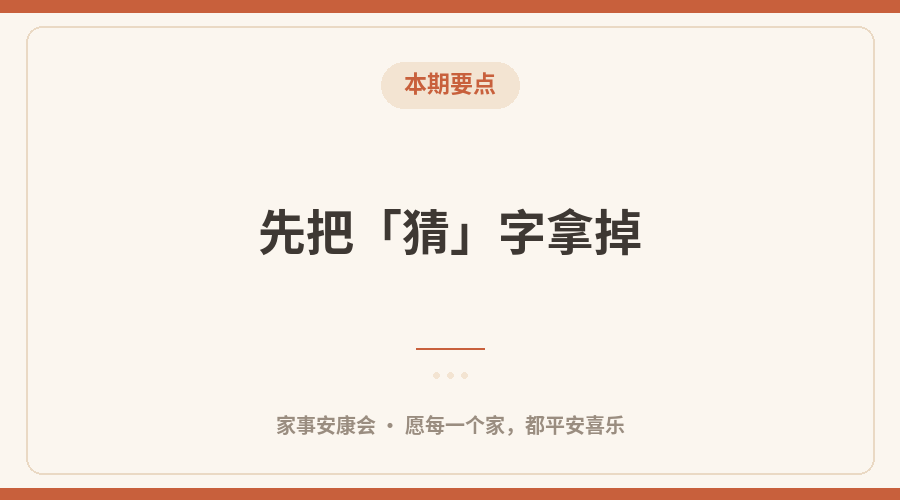
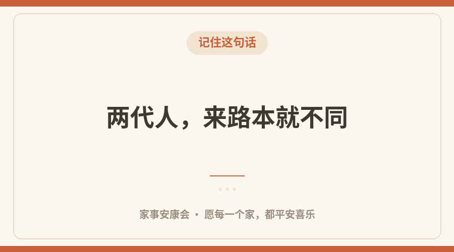

饭吃到一半，碗筷声忽然轻了下来。 一句本来没什么的话，落在两个人耳朵里，却各自转了几个弯。这样的场面，不少家里都遇到过。
今天聊的「饭桌上别翻旧账」，不想评判谁对谁错。婆媳之间大多数时候，争的其实不是那件事本身，而是「我有没有被放在心上」。
先把「猜」字拿掉
一句「您歇着」，说的人是好意，听的人却可能觉得「我是不是帮不上忙了」。好意隔了一层，就容易变成误会。
有话不妨直说，但把语气放软：把「你应该」换成「我想请你」，把「你怎么又」换成「我有点担心」。同一个意思，落到心里是两种温度。立冬后护好血管，避开骤冷时段外出。
两代人，来路本就不同

本期要点
长辈经历过物资紧的日子，节俭、囤东西、舍不得扔，背后是几十年的习惯；年轻人讲效率、讲边界，也不是不孝顺。不是谁故意较劲，是各自带着自己的年代进门。
看明白这一层，很多小火苗就烧不起来。不必说服对方改，先允许「不一样」存在。
中间那个人，别只当传话筒
家里最容易被忽略的，是既当儿子又当丈夫的那位。把两边的原话来回传，只会让话越传越硬。
更稳妥的做法是：各自先听完，再把事说清，不把人评价带进去。 就事论事，不翻旧账，也不在孩子面前分谁更亲。
三件今天就能试的小事

记住这句话
把感谢说出口：一句「妈，今天这菜真合胃口」，比买东西更暖。
商量个各退一步的约定：习惯改不了，就约定具体做法，比讲道理管用。
给关系一个松一点的期待：不必亲如母女，彼此安稳、互相留面子，就已经很好。
写冲突复盘的正确时机与方式，就事论事。相处是慢功夫，不必一天里论出输赢。
你家是怎么把话说开的？欢迎在留言区聊聊，也许正好能帮到另一个人。
愿每一个家，都平安喜乐。——家事安康会
愿每一个家，都平安喜乐
这里是家事安康会，聊聊家长里短、相处之道与安康小事。
觉得有用，点个「在看」，也转给惦记的人。
内容仅供生活参考，具体情况请咨询专业人士。